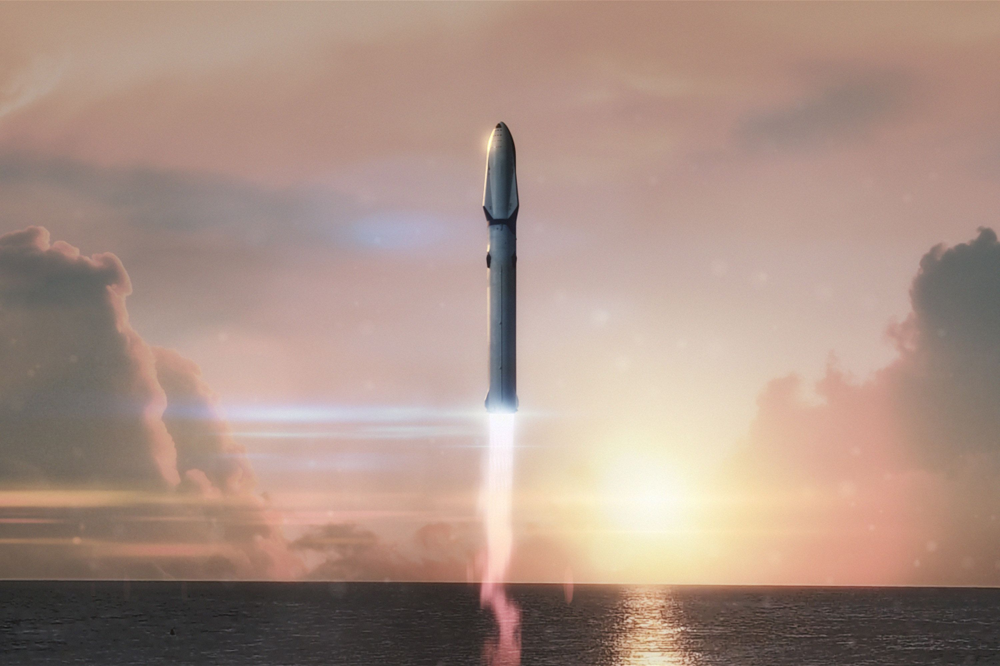
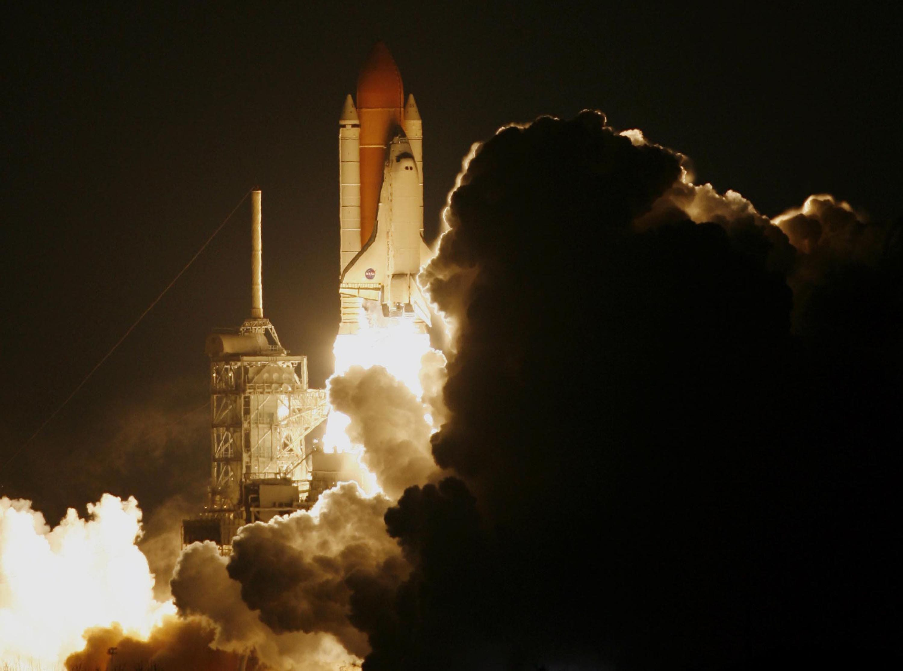

Viktige nyheter - 2026
Planet Prosjekt har
startet
Tor har startet på oppgave 3 i HTML/CSS og dette er resultatet.
Tor's favoritter
Top 3 planeter
Planet nummer 1
Neptun

Neptun er den åttende og fjerneste planeten i solsystemet vårt. Det er den fjerde største planeten. Med en ekvatorial diameter på 49 528 kilometer er Neptun omtrent fire ganger bredere enn Jorden.
Planet nummer 2
Uranus

Uranus er den syvende planeten fra solen, og den tredje største planeten i vårt solsystem. Med en ekvatorial diameter på 51 118 kilometer er Uranus fire ganger bredere enn jorden.
Planet nummer 3
Jupiter

Jupiter er den femte planeten fra solen, og den største planeten i vårt solsystem. Med en radius på 69 911 kilometer er Jupiter 11 ganger bredere enn jorden.
Visste du? Alle de store planetene i systemet vårt kan passe i mellomrommet – side om side – fra jorden til månen.
mer info
Hvis du setter alle de andre planetene i solsystemet side om side, blir deres samlede diameter omtrent 380 000 km.
Siden den gjennomsnittlige avstanden mellom jorden og månen er omtrent 384 400 km, kan de komfortabelt passe inn i mellomrommet.

Starship
SpaceXs Starship er verdens kraftigste oppskytningsfartøy. Den kombinerte megaraketten på over 120 meter er designet som et fullt gjenbrukbart transportsystem, og kan frakte opptil over 100 tonn til bane. Den er bygget for å transportere mannskap og last til jordbane, månen og Mars.

The Space Shuttle
Fartøyet var verdens første gjenbrukbare romfartøy, og fløy totalt 135 oppdrag mellom 1981 og 2011. Den ble skutt opp, manøvrerte i bane og gled tilbake til jorden for å lande som et fly. I løpet av sin 30 år lange levetid transporterte flåten hundrevis av astronauter og satte sammen den internasjonale romstasjonen.
Nøyaktig 42 år skiller den første bemannede romfergen i orbital flyvning og den første integrerte testflyvningen til SpaceX Starship.
Romfergen Columbia ble først skutt opp 12. april 1981, mens det første fullstack Starship lettet 20. april 2023.